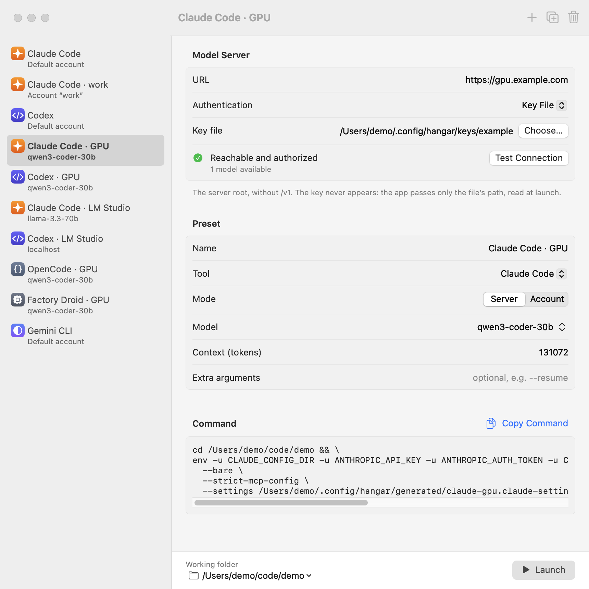

Launch your coding agents from one window.
Hangar is a native macOS app that opens Claude Code, Codex and 17 other CLIs in your terminal: with your usual login, a separate account, or a model server you run yourself.

Two ways to start an agent
Each preset in the sidebar is one tool, started one way. Pick a working folder, press ⌘↩, and the terminal opens there.
With an account
Run the tool with the login you already use, or give a preset its own account. A separate account lives in its own folder, so your work login and your personal one never mix, and presets with the same account name share it.
With your own model server
Point the tool at LM Studio, llama-server, Ollama or a GPU machine in the cloud. Hangar writes the settings each tool expects, checks that the server answers, lists its models, and keeps waiting while a pod is still loading one.
19 tools, each with the options it supports
Hangar finds which ones are installed and shows the install command for the rest.
Server and separate accounts
- ClClaude Codetested
claude - CxCodextested
codex - CoGitHub Copilot CLI
copilot - OcOpenCode
opencode - KiKilo CLI
kilo
- CrCrush
crush - QwQwen Code
qwen - GoGoose
goose - KmKimi Code
kimi - πPi
pi
Server and your account
- VbMistral Vibe
vibe - DrFactory Droid
droid
Server only
- AiAider
aider
Your account
- GeGemini CLI
gemini - CuCursor CLI
cursor-agent - AmAmp
amp - KrKiro CLI
kiro-cli - CnCline
cline - AuAuggie
auggie
Claude Code and Codex have been tested against a mock model server. The other tools follow their documentation and source code, and Hangar marks them as experimental. Tools without separate accounts keep their login in places a folder cannot move, such as fixed Keychain entries.
Install it
Install Hangar with Homebrew, or build it from source.
Install the app with Homebrew.
brew install --cask andreabasile/tap/hangarPick a preset, choose a working folder and press ⌘↩.
Hangar runs on macOS 15 or later on Apple silicon. The DMG is also on GitHub Releases; to build from source you need Xcode 27 or later, see the README.
Your keys stay in their files
- A server preset stores the path to a key file, and the tool reads it when it starts. The key never appears in command arguments, in the files Hangar writes or in the command preview.
- When they talk to your own server, Claude Code and Codex start without your hooks, plugins and MCP servers, and API keys exported by your shell are removed from Claude Code’s environment.
- Presets live in one JSON file you can read and edit, and Hangar never overwrites a file it cannot parse.